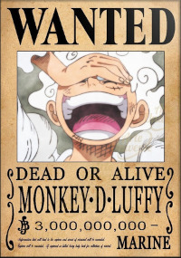
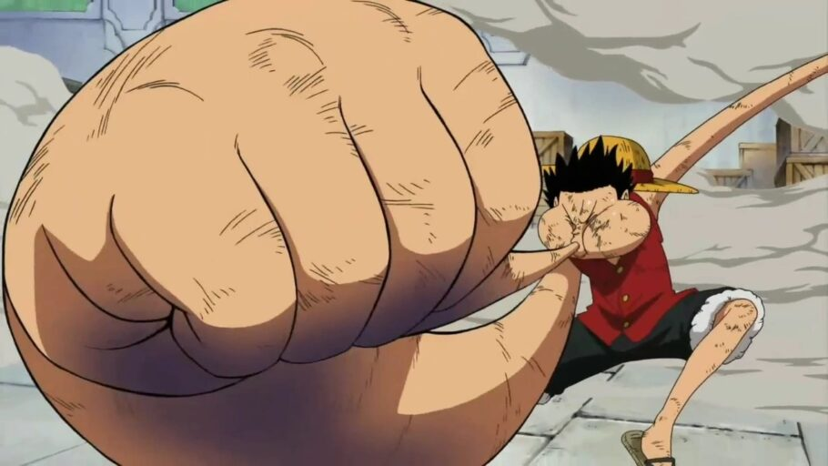
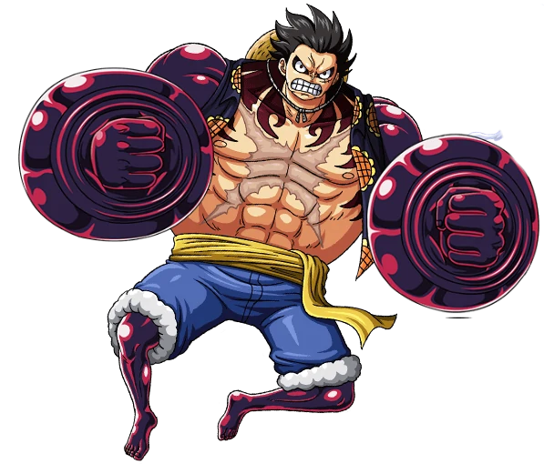
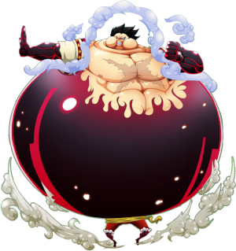
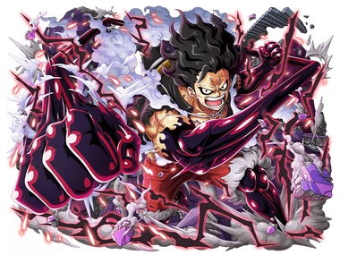
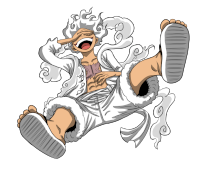

Quem é Monkey D. Luffy?
Monkey D. Luffy, também conhecido como (Luffy do Chapéu de Palha), é um personagem e o protagonista da franquia One Piece criada por Eiichiro Oda. Ele é apresentado como um jovem cujo corpo ganha as propriedades de borracha após ter comido a Gomu-Gomu no Mi, uma das várias frutas amaldiçoadas conhecidas como Akuma no Mi ou Frutas do Diabo. Em busca de seu sonho de ser o Rei dos Piratas, Luffy navega pelo mundo procurando o lendário tesouro One Piece que foi deixado por Gol D. Roger, o antigo Rei dos Piratas. Alegre e aventureiro, Luffy cria seu próprio bando chamado os Piratas do Chapéu de Palha e eles são constantemente antagonizados pela marinha do Governo Mundial. Em batalha, Luffy usa a elasticidade de seu corpo para se esticar e lutar.
Luffy é mais reconhecido por seu chapéu de palha que lhe foi dado por Shanks, um grande pirata a quem ele admira desde criança. A cicatriz embaixo de seu olho esquerdo foi feita por ele mesmo usando uma faca para provar sua bravura a Shanks e sua tripulação, os Piratas do Ruivo.
Atualmente Lufy tem uma recompensa que chega aos 3 Bilhões de Berris.
Poderes de Monkey D. Luffy
A forma primária de combate usada por Luffy é a elasticidade que recebeu ao comer a Gomu-Gomu no Mi e se tornar um homem de borracha, ele consegue esticar e deformar seu corpo de várias maneiras para atacar e nomeia cada um de seus golpes. Ele é imune a eletricidade e a maioria dos golpes que utilizam força bruta, para melhorar suas condições de luta Luffy criou técnicas que alteram seu corpo e melhoram seus atributos físicos, as chamadas Gears (ou Marchas nas traduções do anime no Brasil).
Gear Second
A Gear Second faz com que seu sangue seja bombeado mais rápido para aumentar sua velocidade e força, provocando também um tom vermelho claro na pele de Luffy e vapor saindo dela. Inicialmente era um risco para sua saúde, mas ele aprende a controlar melhor.
Gear Third
A Gear Third (Gear Sado) aumenta partes do seu corpo à proporções gigantescas ao enchê-las de ar com o custo de fazer com que Luffy murche após seu uso. Futuramente ele também supera essa fraqueza.
Voz de Todas as Coisas
Uma outra habilidade que Luffy possui é a "Voz de Todas as Coisas" que o permite entender a língua dos animais. Esse poder ainda é dormente em Luffy e aparece de forma expontânea.
Gear Forth
Luffy desenvolve sua Gear Forth (Gia Fōsu?) após aprender a utilizar Haki. Ele infla seu corpo ao limite e o cobre de Haki do Armamento para ampliar a rigidez da borracha e até consegue se propulsionar pelo ar. A Gear Forth pode assumir três formas diferentes:
Homem Elástico é a mais equilibrada.
Homem Tanque é focado em defesa.
Homem Cobra é focado em velocidade.
Gear Five 
Atualmente no arco de wano em sua luta contra Kaido, Luffy foi capaz de desperta a chamada Gomu-Gomu no Mi para sua verdadeira forma, a Hito Hito no Mi modela Nika o Deus do Sol. Vocês podem se perguntar então porque ele se estica igual borracha? Isso se deve ao fato que ter o corpo de borracha faz parte de uma das habilidades do Nika. Quando o Luffy entra nessa forma ele fica com roupas e cabelos brancos, além disso ele começa rir muito, e nem é meme, ele tem a capacidade de transformar tudo que ele tocar em borracha e ainda remodelar a bel prazer, no mangá inicialmente isso foi visto como toon force, mas é explicado mais a frente sobre. Sendo assim a Gear Five (Gear 5) é quando Luffy entra em seu estado de poder máximo, e já foi dito pelo próprio luffy, "Só entro naquela forma quando estou totalmente livre".
Luffy e seu Haki
Haki do Armamento
Eventualmente Luffy descobre Haki, o poder espiritual interno de todos os seres vivos e ele consegue manifestá-lo em suas três formas. O Haki de Armamento (Busōshoku no Haki) forma uma armadura em torno de si que aumenta seu ataque e defesa além de negar o efeito das Akuma no Mi, permitindo a Luffy contra-atacar certos adversários. Em sua forma avançada o Haki de Armamento pode ser disparado e causar danos internos em seu alvo.
Haki da Observação
O Haki de Observação (Kenbunshoku no Haki) é um sexto sentido que pode detectar a presença, emoções e movimentos de outros seres. Em sua forma avançada o Haki de Observação permite a Luffy ver alguns segundos no futuro.
Haki do Rei
A última e mais rara forma é o Haki do Conquistador (Haōshoku no Haki?) que emana a própria força de vontade do usuário sobre os outros fazendo com que aqueles de mente fraca desmaiem.
Essa forma de Haki não pode ser adquirida por treino e poucas pessoas nascem com ela. É dito que aqueles que a tem são qualificados para se tornarem reis e certamente serão figuras importantes no mundo. Em sua forma avançada, o Haki do Conquistador é infundido aos ataques de forma que eles acertam sem precisar fazer contato.
Gostaria de conhecer os outros Mugiwaras?